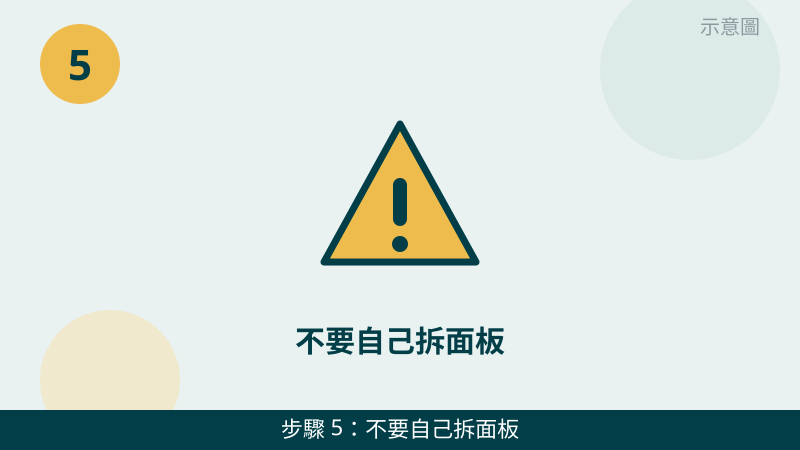

螢幕一出問題就很影響使用，但請先放心：先分清是哪一種問題，後續判斷會快很多。有裂痕、漏液黑塊，通常是面板本身受外力破裂；只有亮線、閃爍、時好時壞，沒有明顯裂痕時，也可能與排線或顯卡輸出有關，兩種處理方向不一樣。
開始之前先跟您說明一個判斷原則：「外接螢幕正不正常」是最關鍵的分水嶺。外接螢幕正常，問題多半在筆電面板這一側；外接螢幕也一樣異常，問題就可能在主機這一側。先做這個測試，再往下判斷。
螢幕的畫面先傳給我們看
把裂痕、黑塊、亮線的位置拍下來，再拍一張外接螢幕測試的結果傳 LINE，是面板還是主機問題一看就知道。先免費評估、報價透明，確認後再預約維修。
螢幕破裂、亮線黑塊自救檢查清單（由簡到難）
- 1. 先看外觀，分清破裂還是亮線、閃爍。請在關機、光線充足的地方看螢幕表面：有沒有放射狀裂痕、撞擊點、墨水般的漏液黑塊？還是表面完好，卻出現直向或橫向亮線、畫面閃爍、時好時壞？怎麼判斷：有裂痕、漏液黑塊，多半是外力造成的面板破裂；沒有裂痕、只有亮線或閃爍，就要往排線、顯卡方向再查。
示意圖（非官方截圖） - 2. 破裂的螢幕不要按壓、不要再開合擠壓。如果已經確認有裂痕，請不要用手指去壓裂痕處測試，也不要反覆開合、不要把東西壓在螢幕上。怎麼判斷：裂痕沒有擴大、黑塊沒有變大，就是保護得好；按壓之後黑塊變大、裂痕延伸，代表破裂正在擴大，請馬上停手。
示意圖（非官方截圖） - 3. 用外接螢幕測試，判斷是面板還是主機問題。如果您家裡有外接螢幕或電視，請用傳輸線把筆電接到外接螢幕，再開機看外接畫面正不正常。怎麼判斷：外接畫面完全正常，問題多半在筆電面板這一側；外接畫面也出現同樣的亮線、閃爍或黑塊，問題就可能在主機這一側；如果您不確定怎麼接線，請先拍照問我們，不要硬插不合的接頭。
示意圖（非官方截圖） - 4. 記下亮線、閃爍出現的時機和位置，拍照留存。請留意：亮線是固定一條、還是位置會跑？是開機就有、還是用一陣子才出現？開合螢幕角度時，亮線會不會跟著變化？把這些情況和螢幕畫面拍下來傳給我們。怎麼判斷：開合角度會影響亮線，比較可能與排線有關；不管角度怎麼動都固定不變，就要再往面板或顯卡方向查；不確定時，先拍照問最保險。
示意圖（非官方截圖） - 5. 不要自己拆面板、不要自己換螢幕。螢幕面板周邊有排線和卡扣，拆法每台機型都不一樣，硬拆很容易弄斷排線或弄破邊框。怎麼判斷：只要您還沒確定機型和拆法，就不要動手；先把機型標籤和螢幕狀況拍照傳給我們，我們會先免費評估，再報價給您確認。

示意圖（非官方截圖） - 6. 儘快拍照傳 LINE、預約送修，不要拖到裂痕擴大。破裂的螢幕放著不管，裂痕和黑塊可能慢慢擴大；亮線、閃爍拖久了，也可能讓判斷變困難。請把第 1 步、第 3 步、第 4 步的照片一起傳給我們，我們會先免費評估，再跟您約送修方式。怎麼判斷：如果外接測試已經分清是面板還是主機問題，評估會更快；如果還分不清，也請先拍照問，不要自己先拆。
示意圖（非官方截圖）
別再自己試了
- 破裂的螢幕還用手按壓測試、反覆開合擠壓——請先停手，裂痕和黑塊可能因此擴大
- 想自己拆面板、換螢幕，但不確定機型拆法——請先拍照問我們，不要硬拆，拆壞排線或弄破邊框反而更貴
- 外接測試接頭不合還硬插、硬轉接頭
- 螢幕已經破裂還放著不管，等黑塊擴大到整面看不見才送修
常見問題
螢幕有裂痕、黑塊，是不是一定要換整個螢幕？
有裂痕、漏液黑塊通常是面板本身破裂，這類情況多半需要更換面板才能恢復正常顯示。不過最終還是要看破裂範圍和機型，我們會先請您拍照評估，報價給您確認後再決定修不修，評估不收費。
螢幕出現亮線、閃爍、時好時壞，也是面板壞了嗎？
不一定。亮線、閃爍、時好時壞也可能與排線接觸或顯卡輸出有關，不一定是面板本身壞了。本文第 3 步的外接螢幕測試，就是先幫您分清是面板還是主機的問題；分不清時請先拍照問我們，不要自己拆面板。
螢幕破裂、亮線的狀況拍照傳 LINE，就可以先判斷嗎？
可以先給方向。把裂痕、黑塊、亮線的位置拍下來，再拍一張外接螢幕測試的結果傳給我們，通常能先看出是面板還是主機的問題；要完全確認，還是需要實機檢測，這部分評估不收費，請放心傳。
相關文章：自救百科總覽